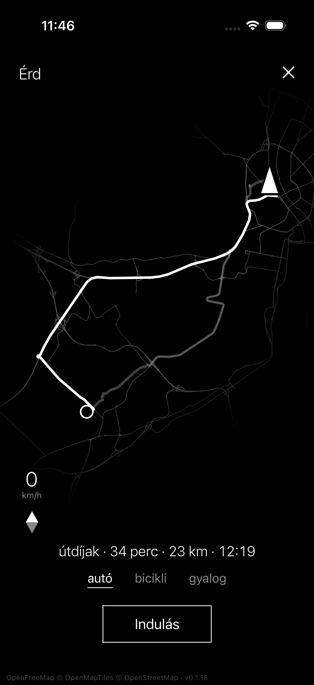

Minimalista navigáció
Ingyenes és reklámmentes.
Fekete-fehér térkép, amin szinte csak az útvonalad látszik. Autóval, biciklivel és gyalog is használható.

Adatvédelmi tájékoztató
A MinimApp egy minimalista navigációs alkalmazás. Nincs fiók, nincs regisztráció, nincs reklám és nincs analitika. Semmilyen személyes adatot nem gyűjtök és nem tárolok.
Helyadatok
Az alkalmazás a pontos helyzetedet csak akkor használja, amikor meg van nyitva (előtérben), és csak a térkép, a navigáció és a sebességkorlát kijelzéséhez. A háttérben nem követ, a helyelőzményeket nem menti el.
Mi hagyja el a telefonodat
Az alkalmazás nyílt, OpenStreetMap-alapú szolgáltatásokat hív meg közvetlenül a telefonodról, titkosított (HTTPS) kapcsolaton. Ezek a kérések hozzám nem jutnak el.
- Térképcsempék · OpenFreeMap A megjelenített térképrészlet. A szolgáltató ebből és az IP-címedből a hozzávetőleges helyzetedet láthatja. tiles.openfreemap.org · openfreemap.org
- Útvonaltervezés és sebességkorlát · FOSSGIS e.V. Valhalla-szervere A kiindulópont és a cél koordinátái. Autós módban a sebességkorláthoz az utolsó néhány GPS-pont is, legfeljebb 10 másodpercenként. valhalla1.openstreetmap.de · adatvédelem
- Címkeresés · Photon (komoot) A beírt keresőszöveg és a hozzávetőleges helyzeted, hogy a közeli találatok kerüljenek előre. photon.komoot.io · adatvédelem
- Címkeresés, tartalék · Nominatim (OpenStreetMap Foundation) Ugyanaz, ha a Photon nem ad találatot vagy nem érhető el. nominatim.openstreetmap.org · adatvédelem
Ezek a szolgáltatók a saját adatvédelmi szabályaik szerint rövid ideig naplózhatják a kéréseket (például az IP-címet) üzemeltetési és visszaélés-megelőzési célból.
Mit tárol az alkalmazás a telefonon
Csak a választott nyelvet (magyar vagy angol). Keresési előzményt, úti célokat és útvonalakat nem ment el. Az alkalmazás törlésével ez is törlődik.
Amit nem csinálok
- Nem követlek más alkalmazásokon vagy weboldalakon keresztül.
- Nem adok el és nem adok át adatot hirdetési célra.
- Nincs harmadik féltől származó analitika, hibakövetés vagy reklám-SDK.
Jogalap és jogaid
A helyadatot a te kérésedre, a navigációs szolgáltatás nyújtásához használom (GDPR 6. cikk (1) b) pont). A helymeghatározási engedélyt bármikor visszavonhatod a telefon beállításaiban. Mivel nem tárolok rólad adatot, nincs mit kiadni vagy törölni. Kérdéssel írj a Kapcsolat oldalon megadott címre. Panaszt a Nemzeti Adatvédelmi és Információszabadság Hatóságnál (naih.hu) tehetsz.
Gyermekek
Az alkalmazás nem gyermekeknek készült, és tudatosan nem kezel gyermekekre vonatkozó adatot.
Változások
Ha az alkalmazás adatkezelése megváltozik, ezt az oldalt frissítem, és a hatálybalépés dátumát átírom.
Apple adatvédelmi összefoglaló
Az App Store „Adatvédelem” címkéjéhez tartozó adatok. A hozzáférés minden esetben az alkalmazás működéséhez kell, és nem kapcsolódik a személyazonosságodhoz.
| Adattípus | Cél | Személyhez kötött | Követés |
|---|---|---|---|
| Pontos hely | Az alkalmazás működése | Nem | Nem |
| Keresési előzmények | Az alkalmazás működése | Nem | Nem |
Engedélyek
Helymeghatározás „Az app használata közben”. Az engedélykérés szövege: „Navigation needs your location.”
Követés (App Tracking Transparency)
Az alkalmazás nem követ, ezért nem kér követési engedélyt.
Google Play adatbiztonsági összefoglaló
A Google Play „Adatbiztonság” szakaszához tartozó válaszok.
| Adattípus | Cél | Kötelező | Kezelés |
|---|---|---|---|
| Hely · pontos hely | Az alkalmazás működése | Igen | Csak a kérés idejére, nem tárolt |
| Alkalmazástevékenység · keresési előzmények az alkalmazásban | Az alkalmazás működése | Nem | Csak a kérés idejére, nem tárolt |
Engedélyek
- ACCESS_FINE_LOCATION: pontos helyzet a navigációhoz
- ACCESS_COARSE_LOCATION: hozzávetőleges helyzet, ha a pontos nem engedélyezett
A térkép, az útvonal és a keresés szolgáltatói az alkalmazás nevében, csak a kérés kiszolgálására kapják meg az adatot. A Google Play szabályai szerint ez nem számít megosztásnak.
Kapcsolat
Novák György Tibor
novak.gyorgy.tibor@gmail.com
Adatvédelmi kérdéssel, kéréssel vagy hibajelzéssel ezen a címen érsz el. Általában néhány napon belül válaszolok.
Adataid törlése
Nem tárolok rólad semmit, így nincs mit törölni. A telefonon tárolt nyelvbeállítás az alkalmazás törlésével megszűnik. A külső szolgáltatók naplóival kapcsolatban az ő adatvédelmi oldalukon tudsz kérést benyújtani (lásd az Adatvédelem oldalon).
Támogatás
A MinimApp ingyenes és reklámmentes, és egyedül fejlesztem. Ha hasznosnak találod, egy kávéval támogathatod a munkámat.
Köszönöm!
Minimalist navigation
Free and ad-free.
A black-and-white map that shows little more than your route. Works for driving, cycling and walking.
Privacy policy
MinimApp is a minimalist navigation app. There are no accounts, no sign-up, no ads and no analytics. I don't collect or store any personal data.
Location
The app uses your precise location only while it is open (in the foreground), and only to show the map, navigate and display the speed limit. It does not track you in the background and does not save your location history.
What leaves your phone
The app calls open, OpenStreetMap-based services directly from your phone over an encrypted (HTTPS) connection. These requests never reach me.
- Map tiles · OpenFreeMap The map area on screen. From this and your IP address the provider can see your approximate location. tiles.openfreemap.org · openfreemap.org
- Routing and speed limits · FOSSGIS e.V. Valhalla server The coordinates of your start and destination. In drive mode, the last few GPS points as well, at most every 10 seconds, to look up the speed limit. valhalla1.openstreetmap.de · privacy
- Place search · Photon (komoot) What you type into the search field, and your approximate location so that nearby results come first. photon.komoot.io · privacy
- Place search, fallback · Nominatim (OpenStreetMap Foundation) The same, when Photon finds nothing or is unavailable. nominatim.openstreetmap.org · privacy
Under their own privacy policies, these providers may briefly log requests (for example the IP address) to run their service and prevent abuse.
What the app stores on your phone
Only your chosen language (Hungarian or English). It does not save search history, destinations or routes. Deleting the app removes this too.
What I don't do
- I don't track you across other apps or websites.
- I don't sell data or pass it on for advertising.
- There is no third-party analytics, crash reporting or advertising SDK.
Legal basis and your rights
Your location is used at your request to provide navigation (GDPR Article 6(1)(b)). You can withdraw location permission at any time in your phone's settings. Because I store no data about you, there is nothing to export or delete. For questions, write to the address on the Contact page. You can lodge a complaint with your local data protection authority; in Hungary this is NAIH (naih.hu).
Children
The app is not directed at children and does not knowingly process children's data.
Changes
If the way the app handles data changes, I will update this page and its effective date.
Apple privacy summary
The answers behind the App Store "App Privacy" label. In every case the data is used for app functionality and is not linked to your identity.
| Data type | Purpose | Linked to you | Tracking |
|---|---|---|---|
| Precise location | App functionality | No | No |
| Search history | App functionality | No | No |
Permissions
Location "While Using the App". Permission prompt text: "Navigation needs your location."
Tracking (App Tracking Transparency)
The app does not track you, so it does not ask for tracking permission.
Google Play data safety summary
The answers behind the Google Play "Data safety" section.
| Data type | Purpose | Required | Handling |
|---|---|---|---|
| Location · precise location | App functionality | Yes | Processed per request, not stored |
| App activity · in-app search history | App functionality | No | Processed per request, not stored |
Permissions
- ACCESS_FINE_LOCATION: precise location for navigation
- ACCESS_COARSE_LOCATION: approximate location if precise location is not allowed
The map, routing and search providers receive data on the app's behalf, only to serve each request. Under Google Play's rules this does not count as sharing.
Contact
Novák György Tibor
novak.gyorgy.tibor@gmail.com
Use this address for privacy questions, requests or bug reports. I usually reply within a few days.
Deleting your data
I store nothing about you, so there is nothing to delete. The language setting stored on your phone is removed when you delete the app. For the external providers' logs, you can send a request through their own privacy pages (see the Privacy page).
Buy me a Coffee
MinimApp is free and ad-free, and I build it on my own. If you find it useful, you can support my work with a coffee.
Thank you!